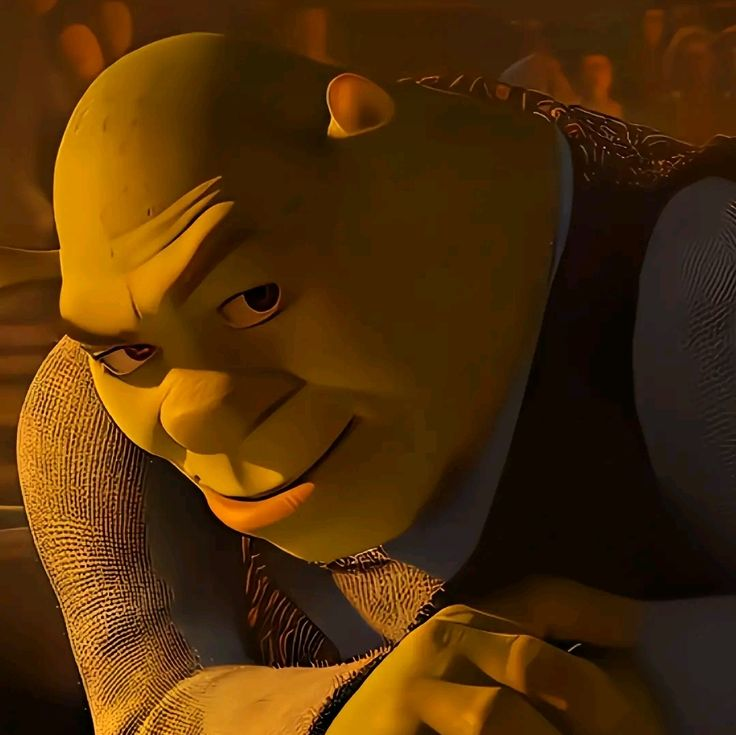

Shrek tuvo un impacto significativo en la comunidad web al popularizar el meme "Shrek is Love, Shrek is Life" y convertirse en un ícono de la cultura de internet. La película y su personaje principal generaron una avalancha de memes, parodias y referencias en redes sociales, foros y videos en línea, destacando su humor irreverente y su mensaje de aceptación y autoaceptación. Además, la franquicia inspiró una amplia gama de contenido fan-made que ha perdurado en la web, consolidando su estatus como un fenómeno cultural en línea.
Shrek trascendió su estatus como una película de animación para convertirse en un fenómeno cultural en la comunidad web. Su enfoque satírico de los cuentos de hadas tradicionales, combinado con un humor irreverente y una historia que promueve la aceptación de uno mismo y de los demás, resonó profundamente en la audiencia en línea. La película inspiró una infinidad de memes, videos virales y parodias que se propagaron rápidamente a través de plataformas como YouTube, Tumblr y Reddit. Además, el carisma del personaje principal y su elenco diverso proporcionaron una base sólida para la creación de contenido fan-made, desde ilustraciones hasta remixes musicales, que mantuvieron viva la llama de la comunidad de Shrek en la web durante años. En resumen, Shrek se convirtió en mucho más que una película; se convirtió en un símbolo de la cultura de internet y un punto de referencia para la creatividad y el humor en línea

Shrek ha dejado una huella indeleble en la cultura popular y en la
comunidad web. Su legado continuará resonando en el futuro, ya que sigue
siendo una fuente constante de memes, referencias y parodias en línea.En
cuanto a lo que nos espera en el futuro, es probable que veamos una
continuación del fenómeno Shrek en forma de nuevos memes,
reinterpretaciones y homenajes en línea. Además, la influencia de la
película en la animación y el cine en general seguirá siendo evidente, ya
que ha influido en generaciones de cineastas y creadores de contenido.
En
resumen, el futuro de Shrek parece brillante y lleno de posibilidades, ya
que su impacto perdurará en la comunidad web y en la cultura popular
durante muchos años más.